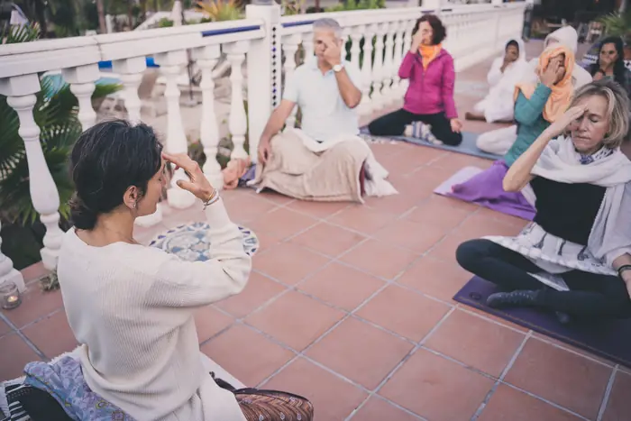

Mentoring 1:1
Un espacio individual para integrar el Yoga, la respiración, la meditación y la mirada ayurvédica en la vida real.
No se trata solo de aprender técnicas o añadir nuevas prácticas a tu rutina, sino de desarrollar una relación más consciente contigo misma. Es adecuado tanto si te acercas al Yoga por primera vez como si ya practicas o enseñas y quieres profundizar con más coherencia.
A través de encuentros individuales y apoyo continuo, cada recorrido se adapta a tus necesidades.
Dos opciones
Sesión intensiva
Una sesión individual profunda (90-120 minutos) para comprender con más claridad tu estado actual —mental, físico y energético— y empezar a ver qué está creando bloqueo, dispersión o desconexión.
- Exploración y análisis de tu estado actual
- Lectura ayurvédica y energética
- Práctica personalizada de respiración, meditación y/o movimiento
- Indicaciones prácticas para los días siguientes
Acompañamiento de 3 meses
Un recorrido individual y continuativo para estabilizar un cambio real e integrarlo en la vida cotidiana.
- Cuestionario y análisis ayurvédico completo
- Sesión inicial profunda (90-120 minutos)
- 3 sesiones individuales de continuidad (60 minutos)
- Indicaciones personalizadas y apoyo entre sesiones
- Acceso a la plataforma online de práctica
Resumen basado en la sección Mentoring 1:1 de melaniadivara.com. Para reservar, escríbeme.
El Último Viaje del Ego
También facilito el curso online y los retiros de El Último Viaje del Ego junto a Miquel Canut.